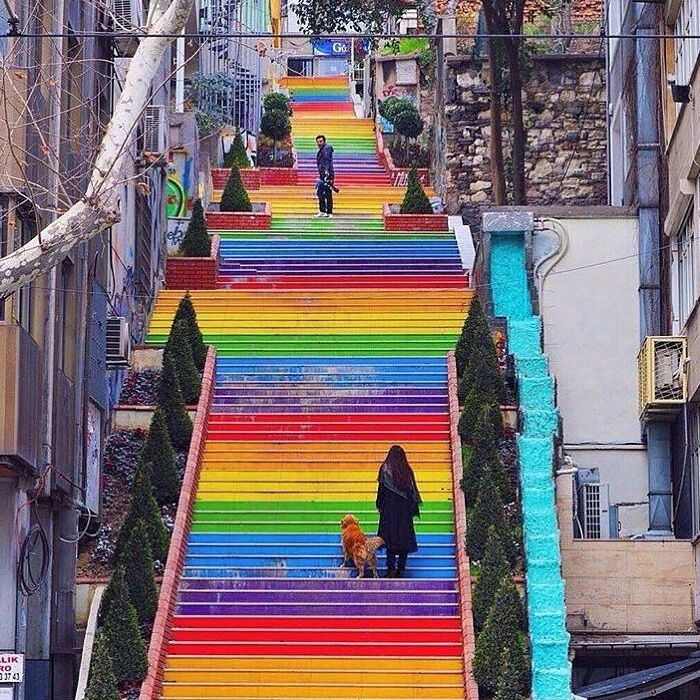

Разноцветная лестница


Sali Pazari Yks. No:2 Purtelas Hasan Efendi Mahallesi, Стамбул 34427 Турция
Несмотря на то, что разноцветная лестница уже стала довольно популярным местом среди гостей Стамбула, она по-прежнему выглядит необычно, и вызывает восторг у фотографов. Как появилось это произведение искусства? Как-то местный житель разрисовал лестницу, чтобы украсить свой район. Но власти посчитали это актом вандализма и через пару дней перекрасили её в серый цвет! После этого народ народ в честь протеста разукрасил несколько лестниц в этом районе, которые после этого уже никто не закрашивал.